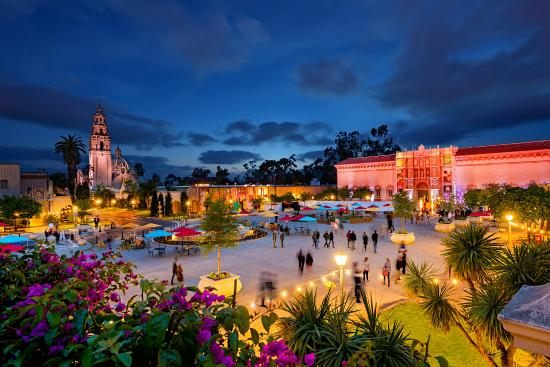

Demi Andile Dumekude


Swahili
| English Phrase | Swahili Phrase |
|---|---|
| Do you speak English? | u nasema kiingereza? |
| Goodbye (more than one peson) |
kwa heri kwa herini |
| Are there any vacancies for tonight? | mna nafasi leo usiko? |
| Thank you very much | asante sana |
| What is your name? | jina lako nani? |
Historical Places in Cape Town
District Six Museum

- "The Museum is committed to telling the stories of forced removals, and assisting in the reconstitution of the community of District Six and Cape Town by drawing on a heritage of non-racialism, non-sexism, anti-class discrimination and the encouragement of debate".
- The District Six Museum is a heritage project in itself. Part of its mission is to provide the space for former inhabitants of District Six to share and explore their memories and develop new interpretations of both the past and the present. The museum also functions as a forum where debate and policy development is initiated.
- The District Six Museum houses an impressive collection of historical materials including photographs, paintings, artefacts, physical remains like street signs, books and studies as well as audio-visual recordings of District Six, most which were donated by its former residents
Iziko slave lodge

- Iziko Museum of South Africa operates 11 national museums in Cape Town
- The Slave Logde,named under the umbrella theme;"From human wrongs to human rights"is one of the most significant landmarks for localsin the city.
- IZIKO is an isiXhosa word, meaning ‘hearth’, traditionally and symbolically the social centre of the home; a place associated with warmth, kinship and ancestral spirits. Here food is prepared and shared, stories are told and knowledge is passed from one generation to the next.
Green Market Square

- Greenmarket Square is one of the liveliest hubs in Cape Town. It’s the second oldest public space in Cape Town, after the Grand Parade. There are many things to do at Greenmarket Square, from exploring the market and grabbing a bite to eat, to exploring the art and discovering the story of the historic cobbled square.
- Greenmarket Square was first established in 1696, in the first century of Dutch occupation of the Cape colony. Since the days of its inception it has served many a purpose, some more admirable than others.
- It was first used as a market square where fresh vegetables grown at the nearby Company’s Garden were sold, along with slaves. A well was also built here, where citizens could fetch water during the dry summer months when the streams off Table Mountain ran dry.